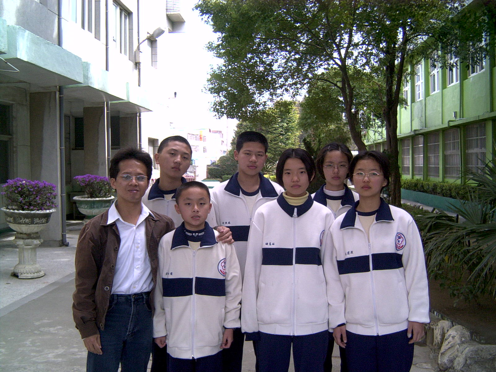
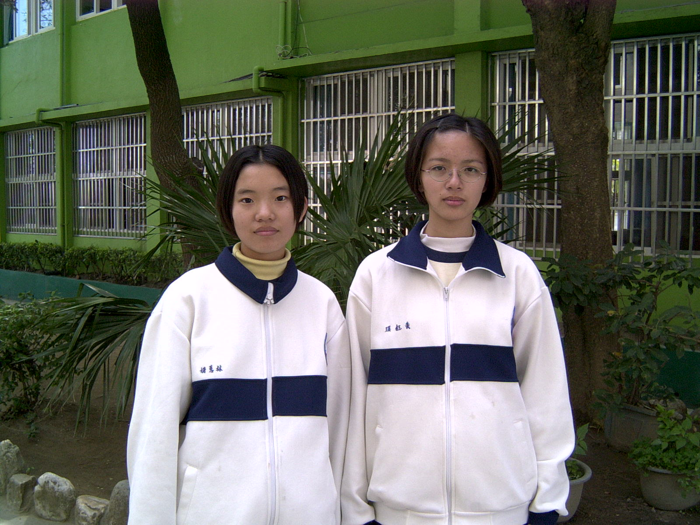
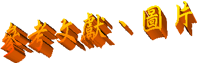

|
|
|
在製作網頁過程中，我們學習到很多，像：團隊合作的重要、製鼓過程的艱辛、製作網頁的技術…等，也懂得時間掌握與利用、工作妥善規劃與分配，當然 也需要很多人的幫助、參與，所以在此
林家馬場──林伉儷（林進行 先生、黃寶珠 女士） 接受採訪，改正我們錯誤訊息，並贈送馬蹄鐵。 永安製鼓社── 接受採訪，提供製鼓資訊。 最後，更感謝兩位指導老師：劉明維 老師、楊志鴻 老師，以及六位製作網頁的組員們：黃鈺琪、林蕙姍、林佳宏、殷開琪、黃昭傑、姚量豪。  

彰化縣線西鄉全球資訊服務網──http://www.chhg.gov.tw/chhgtown/town15/index.asp 彰化縣線西鄉社區網站──http://www.mingtong.com.tw/hsienhsi/ 彰化縣全球資訊服務網──http://www.chhg.gov.tw/ 雅虎奇摩網站──http://tw.yahoo.com 彰化縣線西鄉立圖書館愛鄉！讀鄉！閱讀手冊 彰化縣線西鄉鄉訊季刊 |